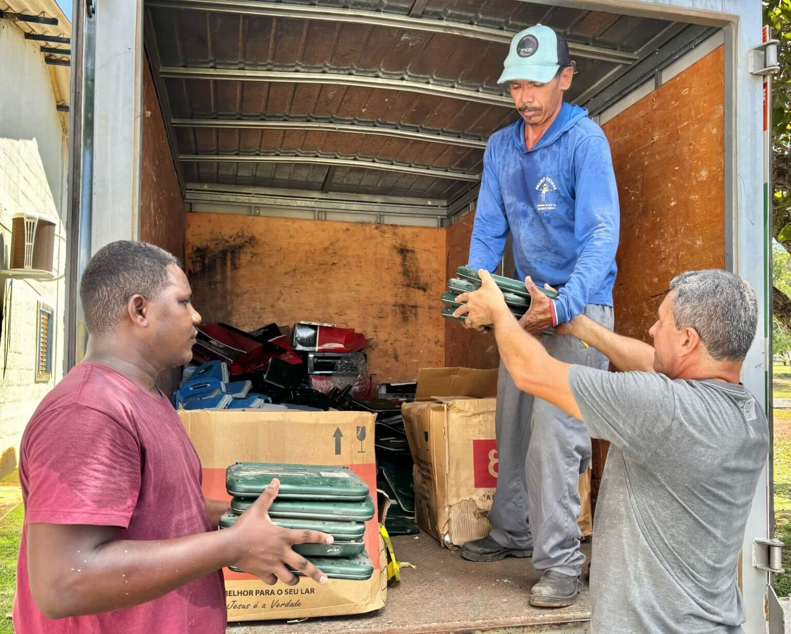
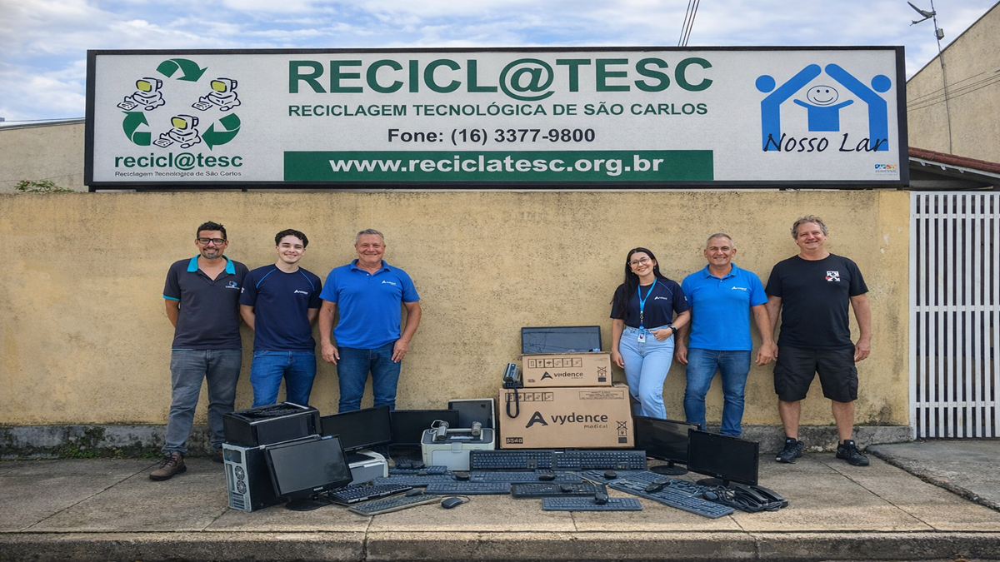

Doações
Projeto ativo
As doações ajudam o Projeto ReConecta a recuperar equipamentos eletrônicos e ampliar o acesso à tecnologia.
Aceitamos equipamentos eletrônicos para reaproveitamento.
Como doar
Entre em contato com o Projeto ReConecta para realizar a doação de equipamentos eletrônicos.
Voluntariado

Os voluntários participam das ações do projeto, contribuindo com a recuperação dos equipamentos e com as atividades de inclusão digital.